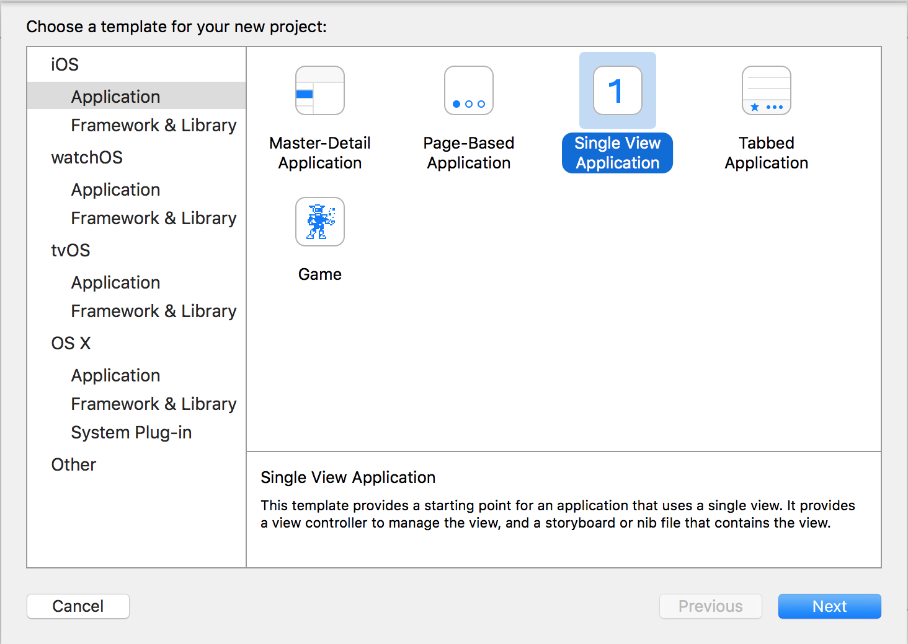

用Swift写围棋App－02建立工程
tags: 应用, 开发随笔
我决定使用Swift来写这个应用。用的IDE是XCode7.2。顺便熟悉一下Swfit，呵呵。
为了便于解释，在github上创建了一个repository，名为 GoTao，取意为The Tao of Go Game，即围棋之道。
项目的地址在这里：https://github.com/marknote/GoTao
为了方便，将几个围棋术语的英语单词简述如下：
| 中文 | 英语 |
|---|---|
| 围棋 | The game of go |
| 围棋盘 | goban |
| 棋子 | Stone |
| 气 | liberty |
我们从头开始。启动XCode，选择建立一个新的Project，选择模版为 Single View Application

选择语言为Swfit，设备选择为iPhone。一路OK，工程建成。
然后运行。可以运行，出现一个白色的界面。
很好。
第一步完成。
提交代码到github。